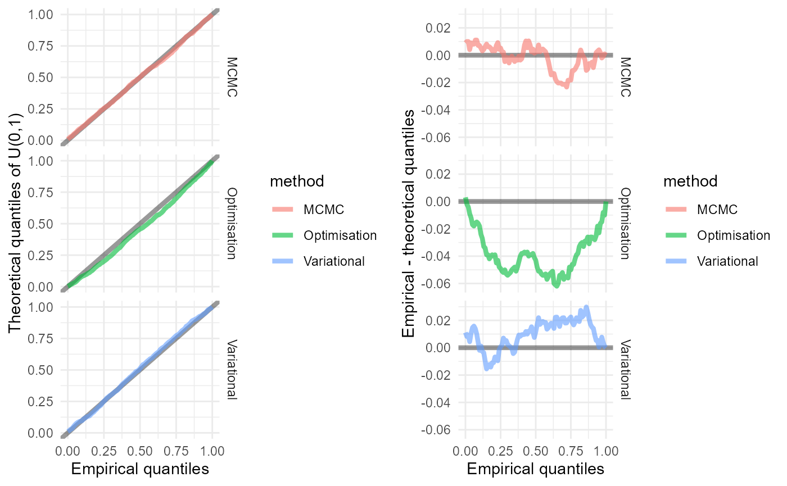

Simulation-based calibration of survextrap
Christopher Jackson chris.jackson@mrc-bsu.cam.ac.uk
2026-01-11
Source:vignettes/sbc.Rmd
sbc.Rmd\[ \def\x{{\boldsymbol{x}}} \def\y{{\boldsymbol{y}}} \]
As described in Talts et al. 2018, “Validating Bayesian Inference Algorithms with Simulation-Based Calibration”, see the Stan manual.
“Validating” here means checking a combination of:
the algorithm has been coded correctly.
the algorithm samples from the correct posterior (e.g. MCMC has converged)
Here we want to test that the survextrap package (which
calls the Stan software for Bayesian estimation) samples from the
posterior that it is supposed to sample from.
Core principle
The posterior \(p(\theta | \y)\), integrated over data \(\y\) generated from the prior predictive distribution \(p(\y)\), is equivalent to the prior \(p(\theta)\).
Core approach to algorithm
-
Repeatedly do:
Simulate a dataset from the prior predictive distribution, i.e. simulate \(\theta\) from the prior \(p(\theta)\) followed by data \(y\) from \(p(y|\theta)\).
Fit the model to this dataset, getting a posterior
Average the resulting posteriors: should end up with the prior you started with
If it doesn’t match: this is evidence of bug in code, or a poorly-performing fitting algorithm.
How is this actually done
Choose some quantity of interest from model \(h(\theta)\) (scalar parameter or function of parameters).
-
For each \(i = 1, \ldots, N\)
generate a value \(\tilde\theta_i\) from the prior, hence a dataset \(\tilde{\y}_i\)
generate a sample of size \(L\), \(\{h(\theta_1), \ldots, h(\theta_L)\}\), from the posterior \(h(\theta | \tilde{\y}_i)\)
compute the rank \(r_i\) of \(h(\tilde\theta_i)\) among \(\{h(\theta_1), \ldots, h(\theta_L)\}\)
Plot a histogram of the ranks \(r_1,\ldots,r_N\). They should be uniformly distributed across \(0\) to \(L\). (proof in Talts et al.)
Awkward aspects
Computationally expensive, though easily parallelisable
- \(L=100\) posterior sample used in Talts et al. Prior samples \(N\) chosen depending on speed of posterior sampling, so that procedure takes a few hours at most. \(N=1000, 10000\) used in Talts et al.
Have to check one parameter / quantity \(h(\theta)\) a time
Informal check by eye: no quantitative measure of bad fit, so can’t automate
Needs informative priors (enough to avoid extreme samples from prior predictive distribution)
Application to survextrap
Compare accuracy of posterior computation using three alternative posterior sampling methods in Stan
Full Hamiltonian MCMC
Optimisation / Laplace approximation
Variational Bayes
Quantity of interest \(h(\theta)\): the restricted mean survival time over 5 years
\(N=1000\) prior samples and model fits, \(L=100\) posterior samples, which takes a few hours.
The knot configuration is fixed, and informative priors are used. These priors are all designed to be strong enough to avoid extreme values. The computation overflowed with a vague \(N(0,20)\) prior on the baseline log hazard scale, but it worked with \(N(0,1)\).
This is not designed to mimic any specific applied situation, since the aim is to validate the the fitting algorithm samples from the correct posterior, not that the posterior is appropriate for a particular situation.
Sample a survival dataset from that hazard function, with fixed design (sample size, censor time)
Simulation and model fitting function
Uses the prior_pred() function supplied with the package
which simulates from a prior predictive distribution. This is called
with fix_prior=TRUE here so we simulate a single value of
\(\theta\) from the prior, followed by
a dataset of 200 observations given that single value. Data are censored
at 5 years
We use survextrap to fit a model to the simulated data,
using the same priors and spline knots that were used for the
simluation. There are no covariates in this example.
The function has one argument i, to enable parallel
computation (see below). Calling this function once does one iteration
i of the algorithm above.
The findInterval call is used to get the rank of \(h(\tilde\theta_i)\)
(summ_prior) among the posterior sample for the \(\{h(\theta_1), \ldots, h(\theta_L)\}\)
(summ).
sim_rank <- function(i, fit_method="opt"){
library(survextrap) # have to do this to parallelise on Windows, inefficient
L <- 100
knots <- 1:5
censtime <- 5
iter <- if (fit_method=="mcmc") 1000 else 2000
simdf <- prior_pred(n=200, censtime=censtime, fix_prior=TRUE,
mspline = list(knots=knots),
prior_hscale = p_normal(0, 1),
prior_hsd = p_gamma(2,2))
rstan::rstan_options(silent = TRUE, open_progress=FALSE,show_messages=FALSE)
tryres <- try(mod <- survextrap(Surv(time, event) ~ 1, data=simdf,
fit_method=fit_method,
iter = iter,
mspline = list(knots=knots),
prior_hscale = p_normal(0, 1),
prior_hsd = p_gamma(2,2),
loo = TRUE,
open_progress = FALSE,
refresh = 0))
if (!inherits(tryres, "try-error")){
summ <- attr(rmst(mod, t=censtime, niter=L),"sample")[[1]]
prior <- attr(simdf, "prior")
summ_prior <- rmst_survmspline(t=censtime, prior$alpha, prior$coefs, knots)
res <- findInterval(summ_prior, sort(summ))
} else res <- NA
res
}MCMC method
The algorithm is used here to evaluate the MCMC model fitting method.
We do a non-parallelised loop over N, but within each
i, 4 chains are run in parallel for MCMC.
N <- 1000 # 194 sec for 10 -> 6 hours for 1000
library(progress)
set.seed(1)
ranks <- numeric(N)
options(mc.cores = 4)
pb <- progress_bar$new(total=N)
for (i in 1:N) {
ranks[i] <- sim_rank(i, fit_method="mcmc")
pb$tick()
}
ranks_mcmc <- unlist(ranks)
saveRDS(ranks_mcmc, file="sbc_files/ranks_mcmc.rds")Optimisation method
The optimisation method is evaluated in a parallelised loop over
N.
N <- 1000
library(doParallel)## Loading required package: foreach## Loading required package: iterators## Loading required package: parallel
library(parallel)
no_cores <- detectCores(logical = TRUE)
cl <- makeCluster(no_cores-1)
registerDoParallel(cl)
clusterExport(cl,list('sim_rank'))
ranks <- parLapply(cl=cl, X=1:N, fun=sim_rank)
ranks_opt <- unlist(ranks)
saveRDS(ranks_opt, file="sbc_files/ranks_opt.rds")
stopCluster(cl)Variational Bayes
The variational Bayes method is evaluated in a parallelised loop over
N.
N <- 1000
set.seed(1)
cl <- makeCluster(no_cores-1)
registerDoParallel(cl)
clusterExport(cl,list('sim_rank'))
ranks <- parLapply(cl=cl, X=1:N, fun=sim_rank, fit_method="vb")
ranks_vb <- unlist(ranks)
saveRDS(ranks_vb, file="sbc_files/ranks_vb.rds")
stopCluster(cl)Graphs of the results
Conventional histograms
library(ggplot2)
methods <- c("mcmc","opt","vb")
methods_full <- c("MCMC","Optimisation","Variational")
fnames <- paste0("sbc_files/ranks_",methods,".rds")
ranks <- purrr::map2_dfr(fnames, methods_full,
~data.frame(rank=readRDS(.x),
method=.y))
bq <- qbinom(c(0.005, 0.995), size=1000, prob=1/101)
p <- ggplot(ranks, aes(x=rank,fill=method,)) +
geom_histogram(binwidth = 1) +
geom_ribbon(fill="gray75",
aes(ymin=bq[1], ymax=bq[2], xmin=-1, xmax=101), alpha=0.4) +
facet_grid(rows=vars(method)) +
xlab("Rank") + ylab("Count out of N=1000") +
ggtitle("Bin width 1") +
theme_minimal() +
theme(legend.position = "none")
bq2 <- qbinom(c(0.005, 0.995), size=1000, prob=1/50)
p2 <- ggplot(ranks, aes(x=rank,fill=method)) +
geom_histogram(binwidth = 2) +
geom_ribbon(fill="gray75",
aes(ymin=bq2[1], ymax=bq2[2], xmin=-1, xmax=101), alpha=0.4) +
facet_grid(rows=vars(method)) +
xlab("Rank") + ylab("") +
ggtitle("Bin width 2") +
theme_minimal() +
theme(legend.position = "none")
gridExtra::grid.arrange(p, p2, nrow=1)
QQ plots, which are easier to interpret than the histograms
x <- seq(0, 1, by=0.01)
rank_ecdf <- purrr::map2_dfr(fnames, methods_full,
~data.frame(x=x,
ecdf = ecdf(readRDS(.x)/100)(x),
method = .y))
rank_ecdf$diff <- rank_ecdf$ecdf - rank_ecdf$x
p1 <- ggplot(rank_ecdf, aes(x=x, y=ecdf, col=method, group=method)) +
geom_abline(intercept=0, slope=1, lwd=1.5, alpha=0.4) +
geom_line(lwd=1.5, alpha=0.6) +
facet_grid(rows=vars(method)) +
theme(legend.position = "none") +
ylab("Theoretical quantiles of U(0,1)") +
xlab("Empirical quantiles") +
theme_minimal()
p2 <- ggplot(rank_ecdf, aes(x=x, y=diff, col=method, group=method)) +
geom_hline(yintercept=0, lwd=1.5, alpha=0.4) +
geom_line(lwd=1.5, alpha=0.6) +
facet_grid(rows=vars(method)) +
theme(legend.position = "none") +
ylab("Empirical - theoretical quantiles") +
xlab("Empirical quantiles") +
theme_minimal()
gridExtra::grid.arrange(p1, p2, nrow=1)
The MCMC and variational Bayes methods seem to be accurate, since the empirical distributions appear to be uniform, though there is evidence of bias in the optimisation method.